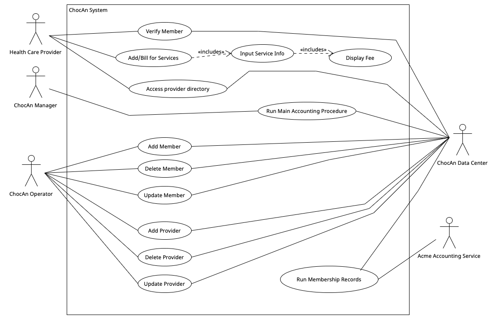

| Student Name | Student Email | CWID | Hours |
|---|---|---|---|
| Adison | anviars@crimson.ua.edu | 12229315 | 10 |
| Ali | aeburkemper@crimson.ua.edu | 12220226 | 10 |
| Jack Bentley | jhbentleylester@crimson.ua.edu | 12165997 | 10 |
| Jack | Test | Test | Test |
| Luca | Test | Test | Test |
| Ryan | rfkutella@crimson.ua.edu | 12192400 | 10 |
| Student Name | Tasks | Percent Contributed |
|---|---|---|
| Adison | user case diagram and use case descriptions | 16.67 |
| Ali | Building glossary, helping build the user case diagram, writing user case descriptions, submitter. | 16.67 |
| Jack Bentley | Use case diagram, use case descriptions, short paragraph | 16.67 |
| Jack | Use case diagram, use case descriptions | 16.67 |
| Luca | Use case descritions, use case description | 16.67 |
| Ryan | Coded the table/report, use case descriptions, use case diagram | 16.67 |
Paragraph here
| ChocAn | Organization dedicated to helping people addicted to chocolate |
|---|---|
| Plastic Member Card | Includes members name and 9 digit member number on a magnetic strip on the back of the card. |
| ChocAn Computer Terminal | Provider uses to access member’s current membership status (valid, invalid, suspended) |
| Provider Directory | Provider uses to look up the 6 digit service code corresponding to the service that was provided to the member. |
| Software Product | Writes the following to a disk: date/time (MM/DD/YYYY HH:MM:SS), date of service (MM/DD/YYYY), provider number (9 digits), member number (9 digits), service code (6 digits), and comments (100 characters). |
| Report | Can be accessed at any time from request of a ChocAn manager, or, on Fridays at midnight reports are generated for the current week's services provided. A report is also sent to any members who consulted a ChocAn provider and includes member name, number, street address, city, state, zip code, and for each service provided includes: date of service, provider name, and service name. Providers also receive a report of services he or she provided to ChocAn members that week, with a total number of consultations and fees at the end. |
| Electronic Funds Transfer (EFT) | A record written to a disk that makes sure the provider's bank account receives the correct amount. |
| Summary Report | Report given to ChocAn managers and details every provider to be paid that week, the number of consultations each had, and his or her total fee for that week. |
| Acme Accounting Services | Third party organization responsible for financial procedures, updating each evening at 9pm. |
| Provider | The health care professional directly dealing with a member to treat their problems |
| ChocAn Manager | ChocAn Manager's have the power to run reports ahead of the automated system by the ChocAn data center. |
| ChocAn Data Center | The data center holds all data for members and communicates with terminals to provide member status, generate weekly reports, and can be used to add or delete members. |
| ChocAn Operator | ChocAn operator's have the power to add, delete, and update new members. |
| Service code | Retrieved by provider to verify to the ChocAn data centers the work being done to a member. Included on reports, retrieved from provider directory. |

Use case: Name of the Use Case.
Context: Brief description of the Use Case.
Actors: List of actors of the Use Case.
Main Success Scenario:
1.
2.
3.
Extensions:
1a. Instead of step 1
3a. Instead of step 3.
3b. Other alternative to step 3.
Use case: Name of the Use Case.
Context: Brief description of the Use Case.
Actors: List of actors of the Use Case.
Main Success Scenario:
1.
2.
3.
Extensions:
1a. Instead of step 1
3a. Instead of step 3.
3b. Other alternative to step 3.